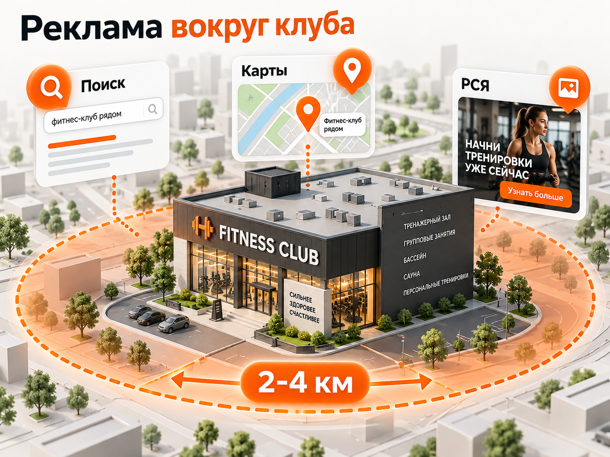
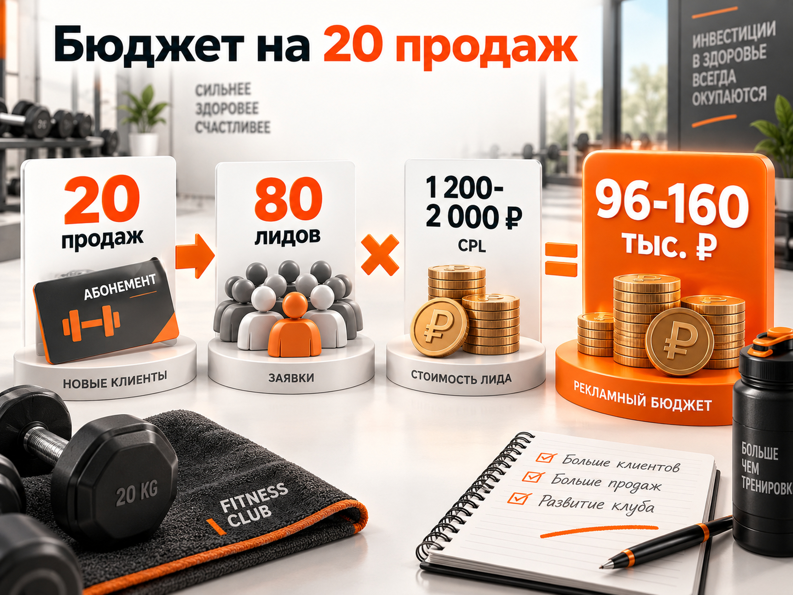

Блог о платном трафике
Как продвигать фитнес-клуб: инструкция и прогноз по Яндекс Директу
Продвижение фитнес-клуба сильно зависит от локации. Человек может заинтересоваться хорошим предложением, но если до клуба неудобно добираться несколько раз в неделю, реклама редко исправит эту проблему. Поэтому для фитнеса особенно важна связка: локальный спрос - понятный оффер - Яндекс Директ - запись на пробное посещение или консультацию - продажа абонемента.
Яндекс Директ здесь подходит хорошо, потому что позволяет перехватывать уже сформированный спрос: «фитнес-клуб рядом», «тренажерный зал», «фитнес с бассейном», «абонемент в фитнес-клуб», запросы с районом, улицей или станцией метро. Параллельно можно работать с более холодной аудиторией через РСЯ и возвращать тех, кто уже был на сайте.
Но оценивать рекламу только по стоимости заявки неправильно. Для фитнес-клуба нужно считать всю воронку до оплаченного абонемента, а в идеале учитывать продления и LTV клиента.

Что происходит с рынком фитнеса
По данным РБК Исследований рынков, по итогам 2025 года объем российского рынка фитнес-центров и спортивных клубов достиг 132 млрд рублей, увеличившись на 13,4% год к году. При этом в сопоставимых ценах рост составил только 4,1%, а стоимость абонементов за год выросла примерно на 9%. То есть рынок продолжает расти, но заметная часть роста связана именно с повышением цен.
Для рекламы это важный момент. Нельзя исходить из логики «фитнес растет, значит любой новый трафик окупится». Клиент сравнивает цену, расположение, оснащение клуба, расписание, наличие бассейна, групповых программ, парковки и другие альтернативы поблизости.
У клуба может быть хороший CTR и недорогие обращения, но плохая экономика, если люди не доходят до пробного посещения или менеджеры плохо переводят обращения в продажи.
Основная воронка продвижения фитнес-клуба
Для обычного клуба я бы ориентировался на такую цепочку:
реклама -> обращение -> квалифицированный лид -> посещение клуба -> продажа абонемента -> продление
Самая опасная ошибка - остановиться на первом показателе и оптимизировать рекламу только под отправку формы.
Например, одна кампания может приводить заявки по 800 ₽, но только 10% из них покупают абонемент. Тогда рекламный CAC составляет 8 000 ₽.
Другая кампания приводит заявки по 1 500 ₽, но продается 30% обращений. CAC получается 5 000 ₽.
Вторая реклама формально дает почти вдвое более дорогой лид, но приносит клиентов дешевле.
Поэтому основными показателями должны быть:
- стоимость обычного лида;
- стоимость квалифицированного лида;
- конверсия лида в посещение;
- конверсия лида в продажу;
- CAC - стоимость нового клиента;
- выручка и маржа с новых клиентов;
- продления и LTV, если эти данные доступны.
Какой оффер рекламировать
Не обязательно сразу продавать годовой абонемент человеку, который впервые увидел клуб.
Для первого контакта обычно проще использовать действие с меньшим барьером:
- пробная тренировка;
- гостевой визит;
- экскурсия по клубу;
- консультация;
- специальная цена первого посещения;
- расчет стоимости абонемента;
- акция на определенный тариф.
Какой вариант будет лучше, заранее определить невозможно. Бесплатное пробное посещение может дать много обращений, но одновременно увеличить количество людей, которые изначально не собирались покупать.
Платное пробное занятие способно уменьшить количество лидов, но повысить их качество.
Это нужно тестировать именно по продажам, а не выбирать победителя только по CPL.
Сайт фитнес-клуба должен продавать конкретную локацию
У фитнес-клуба сайт особенно тесно связан с рекламой.
Человеку после перехода важно быстро понять:
- где находится клуб;
- сколько времени потребуется, чтобы добраться;
- что входит в абонемент;
- какие есть тренажеры и зоны;
- есть ли бассейн, сауна, групповые занятия;
- как выглядит клуб внутри;
- когда он работает;
- сколько примерно стоит посещение;
- как записаться.
Официальный материал Яндекс Рекламы рекомендует показывать программы, тренеров, фотографии клуба, расписание, абонементы, акции, контакты и карту, а для конверсии использовать короткие формы и удобную онлайн-запись.
Если реклама обещает пробную тренировку, после клика человек должен сразу увидеть условия пробной тренировки и кнопку записи. Не стоит отправлять его на общую главную страницу и заставлять самостоятельно искать нужный раздел.
Для разных филиалов желательно иметь отдельные страницы или хотя бы блоки с конкретным адресом, фотографиями, расписанием и предложением именно этого клуба.
Как устроить рекламу фитнес-клуба в Яндекс Директе
Для фитнес-клуба я бы начинал с уже существующего спроса и только потом расширял охват.
Поиск Яндекса
В первую очередь нужны запросы, максимально близкие к покупке:
- фитнес-клуб;
- тренажерный зал;
- фитнес рядом;
- фитнес-клуб рядом;
- фитнес с бассейном;
- купить абонемент в фитнес;
- фитнес-клуб + район;
- фитнес-клуб + метро;
- тренажерный зал + район;
- отдельные востребованные направления клуба.
Отдельно нужно проверить запросы по конкурентам. В некоторых регионах они могут давать нормальный дополнительный спрос, в других пользователь слишком сильно привязан к конкретному бренду.
После запуска обязательно проверяются реальные поисковые запросы. До запуска невозможно предусмотреть весь мусорный трафик: бесплатные тренировки, вакансии, оборудование для спортзала, упражнения дома, онлайн-фитнес и другие некоммерческие формулировки.
Подробнее о работе с ними: Минус-фразы для Яндекс Директа.
География для фитнес-клуба важнее большинства других настроек
В официальном руководстве Яндекс Рекламы для фитнес-клубов при высокой конкуренции предлагается начинать с радиуса около 2 км вокруг объекта, а при меньшей конкуренции расширять его примерно до 4 км. Яндекс отдельно отмечает, что люди обычно выбирают фитнес рядом с домом или работой.
Это не означает, что радиус 2-4 км подойдет каждому клубу. В Москве расстояние лучше оценивать еще и через метро и время в пути. В небольшом городе рабочая зона может быть значительно шире.
Главный принцип другой: не показывать рекламу всему городу автоматически только потому, что клуб технически может принять человека из любого района.
Нужно проверить, откуда фактически приезжают действующие клиенты, и сопоставить эти данные с рекламой.
Если филиалов несколько, имеет смысл разделять географию и экономику филиалов. Официальный материал Яндекса также рекомендует отдельные кампании под разные точки при локальном продвижении.
Мастер кампаний
Для первого теста фитнес-клуба Мастер кампаний выглядит достаточно логично. Он может одновременно работать в Поиске, РСЯ и Яндекс Картах, а алгоритм самостоятельно распределяет показы между площадками.
Это удобно, если пока неизвестно, где именно будет находиться результат.
После накопления статистики уже можно принимать решение, нужна ли более детальная структура в Директ Про.
Про сам инструмент подробнее: Мастер кампаний Яндекс Директ.
РСЯ
РСЯ я бы не рассматривал как замену поиску.
Здесь пользователь может вообще не искать фитнес прямо сейчас. Поэтому объявлению приходится создавать интерес самостоятельно.
Хорошие гипотезы для теста:
- сильное предложение на пробное посещение;
- конкретная стоимость абонемента;
- бассейн или другая заметная инфраструктура;
- клуб рядом с определенным районом;
- семейные программы;
- отдельные востребованные направления;
- сезонное предложение.
Для РСЯ особенно важны нормальные фотографии самого клуба. Стоковый спортсмен с гантелью практически ничего не говорит о том, куда пользователь должен прийти.
Имеет смысл тестировать реальные залы, бассейн, групповые занятия, тренеров и пространство клуба.
Ретаргетинг
Фитнес не всегда покупают после одного посещения сайта. Человек может сравнивать несколько клубов, цены и маршруты.
Поэтому ретаргетинг можно протестировать на тех, кто:
- смотрел цены;
- открывал расписание;
- изучал конкретный филиал;
- начал заполнять форму;
- был на сайте несколько раз, но не записался.
Но для небольшого локального клуба аудитория ретаргетинга может быть слишком маленькой. Сам по себе этот инструмент не должен становиться основой рекламной стратегии.
Какую стратегию выбрать в Директе
Я бы не начинал новую кампанию с жесткой оптимизации по очень дешевой заявке, которой система еще никогда не получала.
Яндекс указывает, что для стратегии «Максимум конверсий» желательно иметь минимум 10 конверсий в неделю, а результат новой стратегии рекомендуется оценивать после 7-14 дней накопления данных. При недостатке событий Яндекс также предлагает сначала использовать более свободную модель и перейти к конверсионной оптимизации после накопления статистики.
Поэтому структура зависит от масштаба.
Если один клуб получает только несколько обращений в неделю, дробить рекламу на десять маленьких кампаний бессмысленно. Каждая получит слишком мало данных.
Если сеть получает сотни обращений, можно гораздо детальнее разделять филиалы, направления, типы спроса и стратегии.
Общий принцип выбора стратегии я разбирал отдельно: Какую стратегию выбрать в Яндекс Директ.
Аналитика: оптимизировать лучше не по форме на сайте
Минимальный вариант аналитики:
Директ -> Метрика -> CRM -> продажа абонемента
Нужно считать заявки с форм, звонки и обращения из других доступных каналов.
Но следующий уровень значительно полезнее - возвращать в рекламную систему информацию о том, что произошло после заявки.
Яндекс Директ позволяет передавать офлайн-конверсии из CRM через Центр конверсий, коннекторы или API. Эти данные можно использовать не только для отчетности, но и для оптимизации рекламных кампаний.
Для фитнеса это особенно важно.
Можно передавать, например:
Лид -> квалифицирован -> пришел в клуб -> купил абонемент
Если объем данных достаточный, алгоритм получает возможность ориентироваться не просто на людей, которые охотно отправляют формы, а на действия, расположенные ближе к реальной продаже.
Какие результаты встречаются в свежих кейсах
Универсальной «нормальной цены лида для фитнес-клуба» не существует.
Хороший свежий пример - кейс клуба Zaruba за период с августа 2025 по апрель 2026 года. По опубликованным данным, Яндекс Директ принес 1 310 заявок. В 2026 году CPL Директа находился примерно в диапазоне 1 900-2 100 ₽. В квалифицированные переходило 60-70% обращений, а конверсия квалифицированной заявки в продажу выросла примерно до 40%.
Если перемножить опубликованные значения, конверсия исходного лида в продажу в этом конкретном проекте находилась ориентировочно в районе 18-28%.
Это единичный кейс, а не среднее по рынку.
В свежих материалах практиков по фитнесу встречаются ориентиры CPL примерно от 600-900 ₽ на отдельных связках до 1 800-2 100 ₽ и выше. Условия там различаются, поэтому объединять эти значения в «среднюю стоимость заявки» некорректно.
Именно поэтому для прогноза лучше брать не одну красивую цифру, а рабочий диапазон.
Прогноз для фитнес-клуба
Без конкретного города, цен клуба, сайта и статистики продаж точный медиаплан делать нельзя.
Для предварительной модели я бы заложил:
- CPL: 1 200-2 000 ₽;
- конверсия лида в продажу: 20-30%;
- основной результат: оплаченный абонемент, а не отправленная форма.
Это не рыночный норматив. Это расчетный диапазон для первого прогноза, который затем нужно заменить фактическими данными конкретного клуба.
Пример: нужно получить 20 новых продаж
Если в продажу конвертируется 25% лидов:
20 продаж / 25% = 80 лидов
При CPL 1 200 ₽:
80 × 1 200 ₽ = 96 000 ₽ рекламного бюджета
При CPL 2 000 ₽:
80 × 2 000 ₽ = 160 000 ₽
Таким образом, для 20 продаж расчетный рекламный бюджет составляет примерно 96 000-160 000 ₽.
Рекламный CAC получится:
96 000 / 20 = 4 800 ₽
или
160 000 / 20 = 8 000 ₽
То есть в этой модели один новый клиент обходится примерно в 4 800-8 000 ₽.
Если фактическая конверсия отдела продаж окажется 20%, для тех же 20 продаж потребуется уже 100 лидов и бюджет 120 000-200 000 ₽.
Если конверсия составит 30%, достаточно примерно 67 лидов, а расчетный бюджет будет около 80 000-134 000 ₽.
Именно конверсия после заявки может менять экономику рекламы почти так же сильно, как сам CPL.
Как определить допустимую цену заявки
Сначала нужно определить, сколько клуб вообще может заплатить за нового клиента.
Например, допустимый рекламный CAC составляет 6 000 ₽.
Если из лида в покупателя превращается 25% обращений:
6 000 ₽ × 25% = 1 500 ₽
Значит, допустимый CPL составляет примерно 1 500 ₽.
Если реклама стабильно приводит заявки по 2 000 ₽, бессмысленно просто требовать от специалиста «снизить CPL».
Нужно искать, что можно изменить:
- увеличить конверсию сайта;
- улучшить качество трафика;
- повысить конверсию отдела продаж;
- изменить предложение;
- увеличить средний чек;
- увеличить LTV;
- отключить направления, которые не окупаются.
Иногда проблема вообще находится не в рекламном кабинете.
Для предварительной оценки поискового трафика можно использовать инструмент прогноза Яндекс Директа, но прогноз кликов еще нужно самостоятельно переводить в заявки и продажи. Подробнее: Прогноз бюджета Яндекс Директ.
Сезонность фитнес-клубов
В отраслевых материалах 2026 года регулярно выделяются два сильных периода: январь после новогодних праздников и конец лета - начало осени. Лето обычно слабее по спросу. При этом рост спроса не означает автоматического снижения CPL: в сильный сезон одновременно увеличивается активность конкурентов и дорожает аукцион.
Поэтому я бы не делал один неизменный рекламный бюджет на все 12 месяцев.
Перед сильным сезоном нужно заранее подготовить:
- посадочную;
- новые объявления;
- фотографии и видео;
- сезонный оффер;
- увеличенный рекламный бюджет;
- отдел продаж;
- CRM и аналитику.
В слабый период можно не просто выключать рекламу, а тестировать другие предложения, заниматься удержанием клиентов и готовить аудитории к следующему росту спроса.
Что кроме Яндекс Директа стоит использовать
Для фитнес-клуба я бы обязательно рассматривал Яндекс Карты.
Это тот же локальный сформированный спрос: человек уже ищет фитнес или смотрит, какие клубы находятся рядом. Профиль должен быть заполнен, содержать реальные фотографии, расписание, услуги, телефон, сайт и актуальные отзывы.
Мастер кампаний также способен показывать рекламу в Яндекс Картах.
Второе направление - локальное SEO. Страницы клуба могут собирать запросы по городу, району, метро, бассейну и отдельным направлениям тренировок.
Социальные сети больше подходят для демонстрации атмосферы клуба, тренеров, мероприятий и результатов клиентов. Они могут участвовать в привлечении, но по механике это более холодная аудитория, чем человек, который прямо сейчас ищет «фитнес-клуб рядом».
Еще один сильный инструмент именно для фитнеса - собственная клиентская база: продления, возврат бывших клиентов, реферальные программы и предложение привести друга.
Основные ошибки в продвижении фитнес-клуба
Рекламировать клуб на весь город. Большая аудитория выглядит привлекательно, но часть пользователей просто не готова регулярно ездить так далеко.
Оптимизироваться на дешевые заявки. CPL без данных о продажах легко приводит к неправильным решениям.
Смешивать разные филиалы. У точек могут быть разная конкуренция, аудитория, спрос, тарифы и допустимый CAC.
Вести весь трафик на главную. Запрос на бассейн, пробную тренировку и конкретный филиал должен получать максимально релевантное продолжение после клика.
Использовать только стоковые фотографии. Человек выбирает реальное место, в которое ему предстоит ходить несколько раз в неделю.
Сразу ограничивать алгоритм низкой ценой конверсии. Новая кампания еще не знает реальный CPL и может просто потерять охват.
Не передавать продажи обратно в аналитику. В результате реклама оптимизируется под тех, кто оставляет форму, а не под тех, кто покупает.
Делать слишком много маленьких кампаний. При небольшом объеме заявок алгоритмам не хватает данных для нормального обучения.
Пошаговый план запуска
- Определить допустимый CAC нового клиента.
- Посчитать текущую конверсию лида в продажу.
- Рассчитать допустимый CPL.
- Проверить спрос по району и конкурентам.
- Выделить реальную географию клиентов вокруг клуба.
- Подготовить отдельное предложение для рекламы.
- Проверить сайт и мобильную версию.
- Настроить Метрику, формы, звонки и CRM.
- Запустить горячий поисковый спрос.
- Параллельно протестировать Мастер кампаний или отдельные гипотезы РСЯ.
- Анализировать поисковые запросы и качество лидов.
- Передавать квалификацию и продажи из CRM.
- Сравнивать кампании уже по CAC, а не только по CPL.
- Увеличивать бюджет только после подтверждения экономики.
Общую техническую последовательность запуска я подробно разбирал в инструкции Как настроить Яндекс Директ в 2026 году.

Сколько в итоге закладывать на продвижение фитнес-клуба
Одной универсальной суммы нет.
Для предварительного расчета рекламы одного клуба разумнее идти от требуемого количества новых клиентов.
Если взять рабочую модель этой статьи - CPL 1 200-2 000 ₽ и конверсию лида в покупку 20-30%, рекламный CAC находится примерно в диапазоне 4 000-10 000 ₽.
При цели 20 новых продаж в месяц ориентировочный бюджет Директа получается примерно 80 000-200 000 ₽ в зависимости от фактического CPL и работы отдела продаж.
Это широкий диапазон специально.
После первых недель его нужно заменить реальными показателями конкретного клуба: стоимостью клика, конверсией сайта, качеством обращений, продажами и CAC.
Для фитнес-клуба хороший Яндекс Директ - это не реклама, которая дает самые дешевые формы. Это реклама, которая приводит людей из подходящей географии и превращается в продажи абонементов по стоимости, допустимой для экономики клуба.